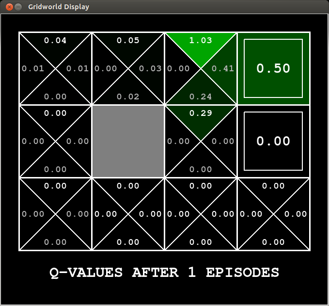
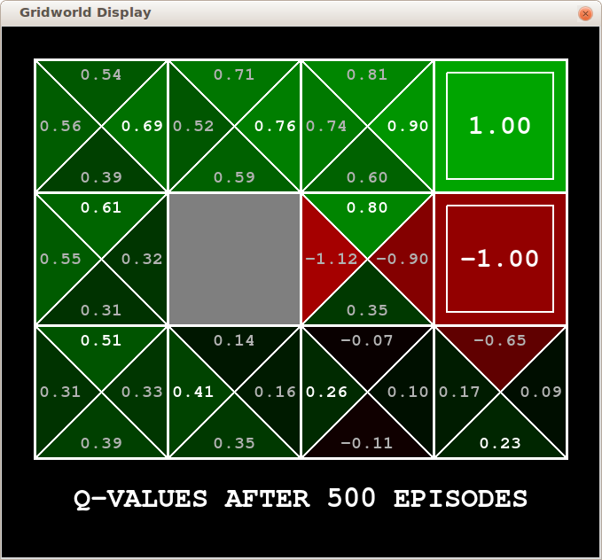
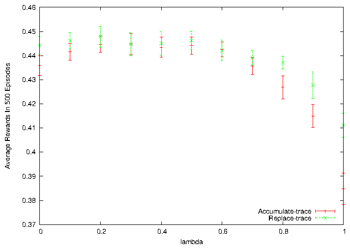
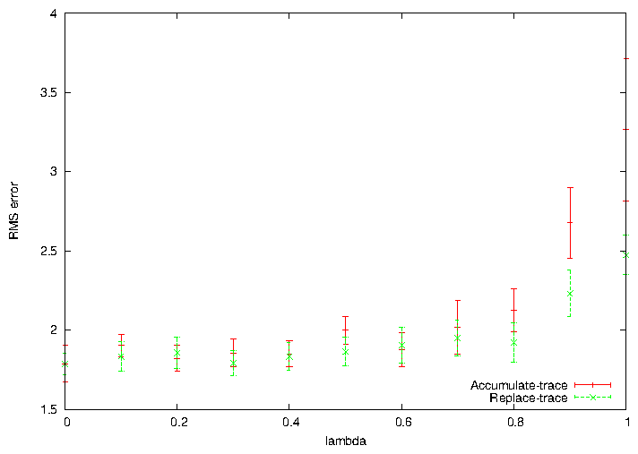
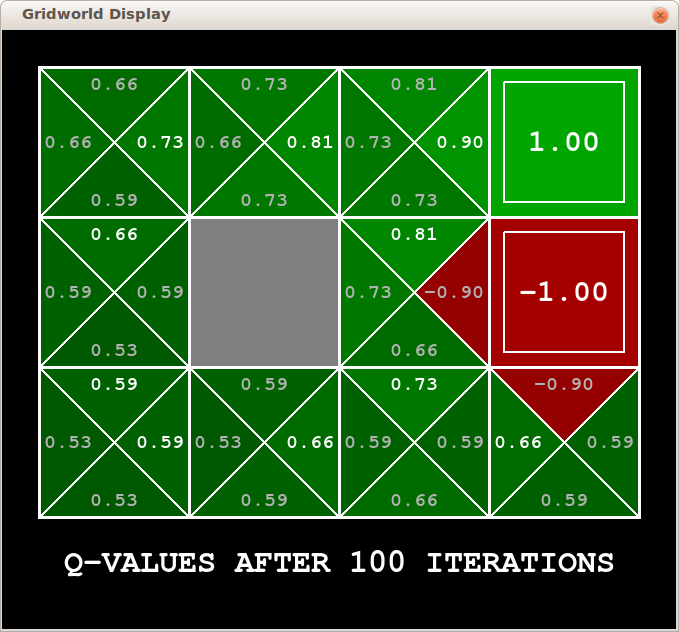
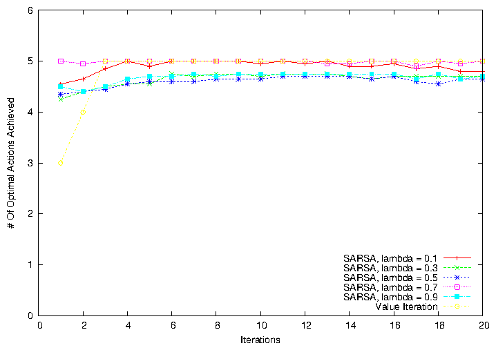

Eligibility Traces
Shun Zhang (sz4554)
The source code is from Reinforcement Learning project of CS343 Artificial Intelligence course.
The framework is provided. The Q-learning part was pair programmed by Paul Nguyen and me.
Now I implemented SARSA(λ) and other experiment utility functions based on it for this assignment.
1 Demonstration of SARSA(λ)
The experiment is run in a gridworld shown below. It's similar to the random walk example in the book.
The difference is that the actions contain up, down, left, right.
The start state is the bottom-left one.
There are 2 exiting states - the top-right one has a reward of 1 and the middle-right one has a reward of -1. No rewards for other states.
It's episodic. When exiting from the exiting states, the agent goes back to the start state.
The parameters are ϵ = 0.3, α = 0.5, λ = 0.9, γ = 0.8.
Accumulating-trace is applied.
From the first figure, we can observe that the exiting state has the value of 0.5, half of the reward of 1 (as the learning rate is 0.5).
Other state, action pair whose values updated are on the path reaching the exiting state. The closer the state is to the exiting state, the larger update is made.
We can also observe the flaw of accumulating-trace.
Consider the biggest value so far (the brightest in the figure) - the action going up in the state next to the good exiting state.
It is visited more than one time (bumping into the wall), so considered responsible more for the +1 reward later.
While the action really leads to the good exiting state (going right) is only visited once. It has less update.
Commands for generating these results are in /src/README.


Figure 1: Q function after 1 iteration and 500 iterations
2 Accumulate-trace And Replace-trace For Different λs
2.1 Compare By Performance
We compare the performance of accumulate-trace and replace-trace in this gridworld.
First, we evaluate the performance of different traces and λs by the rewards the agent obtained.

Figure 2: Accumulate-trace And Replace-trace For Different λs
As shown in Figure 2, when λ is 0, it is exactly one step SARSA. Accumulate-trace and replace-trace share the same performance.
The larger λ is, the further the states would be affected in the past.
The issue that whether we should put more weights on the states visited many times (this is what accumulate-trace does) becomes essential.
As the environment is Markov, taking a action on a state for more times does not make it more responsible for the reward in the future.
So replace-trace wins here.
We also observe that the average reward drops when λ is too big.
In this gridworld, the reward is lead directly by the states next to the exiting states.
Caring too much about the states in distance from the reward would harm.
For example, going up and bumping into the wall, and then going right to the exiting state with reward +1
would make the agent think that bumping into the wall is related to this reward, which is actually not the case.
2.2 Compare By RMS Error

Figure 3: Accumulate-trace And Replace-trace For Different λs
In Figure 3, I show the RMS error on values is used in the book.
It's reasonable because the policy is generated from the values.
The problem of this metric is that a small error on the values of states may lead to big difference in policy - it depends on how the errors distributed.
As we are pursuing the optimal policy, the rewards the agent gained, shown in previous subsection, are a convincing metric.
The error is big, compared to the random walk in the book.
It's okay, because there are many state, action pairs that the agent won't care about.
The agent finds the states leading to the bad exiting state less interesting. It visits them only in exploration.
So it doesn't learn much about those states, which caused the error.
I computed the RMS error by compare it with the real Q values.
I run policy iteration for 150 iterations, with 100 sweeps of policy evaluations within one iteration.
The Q values have converged - actually, they are same as the results after 100 iterations.
We can observe that the values on the optimal path (going up till the wall and going right to the exiting state) are learned well.
Actually, in the first few episodes the optimal path is found for this simple gridworld.
The rest of the episodes are just making the values more accurate.

Figure 4: The Q values after convergence by policy iteration
2.3 Compare By Policy Convergence Rate

Figure 5: The Q values after convergence by policy iteration
In Figure 5, we show the optimality of actions on the optimal path. There are 5 states on the optimal path leading to the good exit.
We are comparing replaced-trace SARSA(λ) with value iterations.
SARSA(λ) is almost certain to find the optimal policy after a few iterations, because of the update according to eligibility trace.
Value iterations need time to back-propagate, but it stably converges to the optimal policy, because it doesn't need explore (Bellman equation is satisfied for this part).
The oscillation of SARSA is caused by ϵ-greedy exploration.
For a larger state space, we can imagine eligibility trace can converge to the optimal policy faster, staying around there and keeping exploration.
Value iteration would take some time to achieve Bellman optimality equation. When it does, it's sure that the optimal policy is found.
File translated from
TEX
by
TTH,
version 4.01.
On 18 Feb 2013, 11:39.